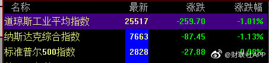
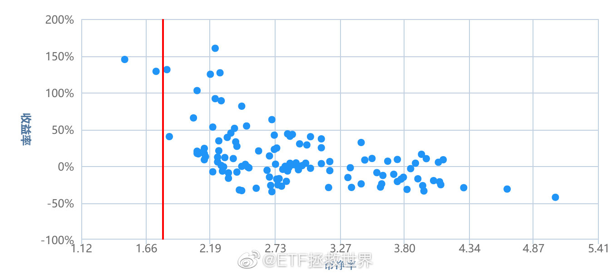
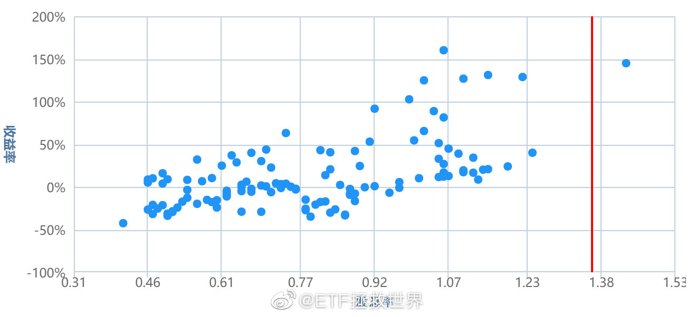
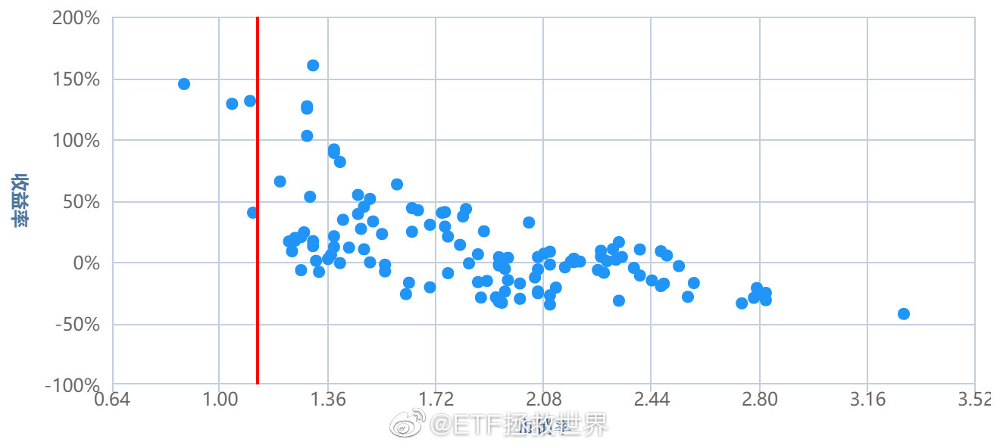
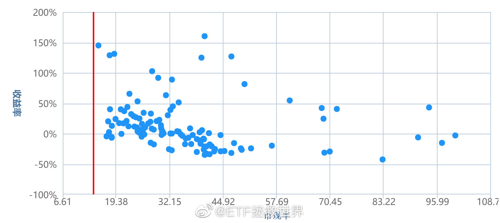

关心了一天国家大事，要去休息了。昨晚是这些年第一次睡足8小时，今天感觉很精神。无论在市场上资产如何波动，吃得好，睡得香才能说明你的投资是健康的。每天为了那点波动心惊胆战涨跌都难受，那你就要好好审视一下自己的组合是不是合适了。晚安。
要崩一起崩，拉上欧洲一起跳~~~@财联社APP:美股开盘，三大股指集体低开，道指跌1%，纳指跌1.13%，标普500跌0.98%。中概股大幅低开，新浪跌11%，一季度广告业务增速下滑；微博跌11%，第二季度指引低于预期。 
我个人觉得吧这场仗不管你愿意不愿意，已经开打了。华为倒了，对每一个中国人都不会是好事。你说你跟华为没关系？南美的一个蝴蝶扇一下翅膀都能引起德克萨斯的龙卷风，怎么可能没关系？产业链，税收，福利，这个国家的方向——是永远给别人做牛仔裤和打火机，还是能站的高一点……等等等等。不可能无关的。所以，即使你不喜欢，不支持这家公司，你也为这个国家这场战争做不了什么，能不能闭上嘴，不再冷嘲热讽？几十年后，你孙子问你，爷爷，当年他们打我们的时候，你做过什么？你会不会很骄傲地说：你爷爷当年用键盘帮着对方喷我们自己来着？
回复@一只汪迎面走来:非常有趣。投资这件事需要考虑若干个层面。一个是事情未来的发展，另一个层面是你要买东西的性价比。只关注哪个层面都不行。这个一定要认真体会一下。//@一只汪迎面走来:之前看到老大说今年毛衣的情况跟去年不一样，不知怎的竟然有点悲观，现在看到你这么说，我又放心了@ETF拯救世界:如果你发现每天早上睁开眼睛都有坏消息，那你就要控制节奏。这里面牵扯到很多问题，不仅仅是坏消息包含的内容，也有心理学的因素在内。一个接一个的坏消息，对心理的打击要比所有坏消息一起出的力度要大得多。所以你就能看到对方接二连三的释放坏消息打击你，这不是他每天制造一个，而是早已经谋划好，只是一个一个放出来而已。在这种时候，如果要买，就要控制节奏。即使坏消息本身最终可以克服，但慌不择路的群众以及有避险需求的人踩过来的无数只脚也比较可怕。所以不要急，控制节奏，离远点，站边上盯紧了，别让群众把你踩死。这一波下跌我没给大家喝什么鸡汤。因为经过去年一役，大部分人已经从感性和理性两方面得到了锻炼。经过训练的战士没必要没完没了的讲道理。就这么点事，踏踏实实的。
我不知道你相不相信历史数据。即使不信，参考一下也好。当然，历史未必等于未来。然而我愿意给你下面这几个数据，让你有个参考。下面几张图，是中证500的PB/股息率/PS/PCF对应的未来一年收益率。纵轴是收益率，横轴是各项数据。怎么看呢。很简单，就是当500的各项数据在某个数值的时候买入，可以看到持有整整一年后，收益率是多少。这种图，散点越规则就越有效。比如PB越低，收益率越高。PB越高，收益率越低。然后散点都是按照这个规则形态分布，那就非常有效。接下来，好好看看吧。红线是目前位置。你可以看看，这个位置买，一年至少会涨多少。说实话，我都有点怀疑这么高历史还会重演吗。记住今天，2019年5月23日。2020年5月23日我会把这个帖子翻出来。咱们一起看看结果如何。（这么好的帖子你居然不打赏？）（我看评论有人说看不懂？很简单啊。比如第一张PB。目前红线周围有三个点，分别对应130%和45%左右的纵轴。说明历史上有过三个月与目前PB相同。那三个月买入，两次一年收益率130%，一次45%啊。）
今天收盘后还有6%-8%左右的空间回到钻石坑。这样的状态再维持一周，月底必然有车。这种时候，不买不是中国人。//@ETF拯救世界:回复@归来DFC:昨天收盘还差8%-9%左右。//@归来DFC:e大，这一次是不是真的要创历史跌回钻石坑了，距离很近了吧@ETF拯救世界:如果你发现每天早上睁开眼睛都有坏消息，那你就要控制节奏。这里面牵扯到很多问题，不仅仅是坏消息包含的内容，也有心理学的因素在内。一个接一个的坏消息，对心理的打击要比所有坏消息一起出的力度要大得多。所以你就能看到对方接二连三的释放坏消息打击你，这不是他每天制造一个，而是早已经谋划好，只是一个一个放出来而已。在这种时候，如果要买，就要控制节奏。即使坏消息本身最终可以克服，但慌不择路的群众以及有避险需求的人踩过来的无数只脚也比较可怕。所以不要急，控制节奏，离远点，站边上盯紧了，别让群众把你踩死。这一波下跌我没给大家喝什么鸡汤。因为经过去年一役，大部分人已经从感性和理性两方面得到了锻炼。经过训练的战士没必要没完没了的讲道理。就这么点事，踏踏实实的。
回复@归来DFC:昨天收盘还差8%-9%左右。//@归来DFC:e大，这一次是不是真的要创历史跌回钻石坑了，距离很近了吧@ETF拯救世界:如果你发现每天早上睁开眼睛都有坏消息，那你就要控制节奏。这里面牵扯到很多问题，不仅仅是坏消息包含的内容，也有心理学的因素在内。一个接一个的坏消息，对心理的打击要比所有坏消息一起出的力度要大得多。所以你就能看到对方接二连三的释放坏消息打击你，这不是他每天制造一个，而是早已经谋划好，只是一个一个放出来而已。在这种时候，如果要买，就要控制节奏。即使坏消息本身最终可以克服，但慌不择路的群众以及有避险需求的人踩过来的无数只脚也比较可怕。所以不要急，控制节奏，离远点，站边上盯紧了，别让群众把你踩死。这一波下跌我没给大家喝什么鸡汤。因为经过去年一役，大部分人已经从感性和理性两方面得到了锻炼。经过训练的战士没必要没完没了的讲道理。就这么点事，踏踏实实的。
如果你发现每天早上睁开眼睛都有坏消息，那你就要控制节奏。这里面牵扯到很多问题，不仅仅是坏消息包含的内容，也有心理学的因素在内。一个接一个的坏消息，对心理的打击要比所有坏消息一起出的力度要大得多。所以你就能看到对方接二连三的释放坏消息打击你，这不是他每天制造一个，而是早已经谋划好，只是一个一个放出来而已。在这种时候，如果要买，就要控制节奏。即使坏消息本身最终可以克服，但慌不择路的群众以及有避险需求的人踩过来的无数只脚也比较可怕。所以不要急，控制节奏，离远点，站边上盯紧了，别让群众把你踩死。这一波下跌我没给大家喝什么鸡汤。因为经过去年一役，大部分人已经从感性和理性两方面得到了锻炼。经过训练的战士没必要没完没了的讲道理。就这么点事，踏踏实实的。